Steady two-dimensional flow to wells
Contents

The Python code provided below is from
Analytical Groundwater Modeling: Theory and Applications Using Python
by Mark Bakker and Vincent Post
ISBN 9781138029392
The book is published by CRC press and is available here.
This Notebook is provided under the MIT license.
© 2022 Mark Bakker and Vincent Post
Steady two-dimensional flow to wells#
%matplotlib inline
import numpy as np
import matplotlib.pyplot as plt
plt.rcParams["figure.figsize"] = (8, 3) # set default figure size
plt.rcParams["contour.negative_linestyle"] = 'solid' # set default line style
plt.rcParams["figure.autolayout"] = True # same at tight_layout after every plot
Radially symmetric flow on a circular island#
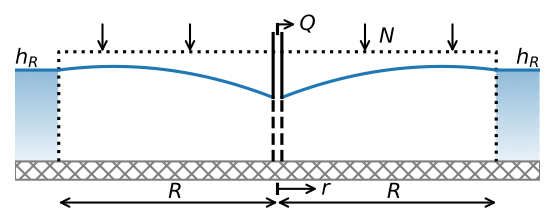# parameters
k = 5 # hydraulic conductivity, m/d
zb = 0 # bottom elevation of aquifer, m
N = 0.001 # areal recharge, m/d
R = 200 # radius of the island, m
hR = 10 # head at edge of island, m
rw = 0.3 # well radius, m
Qhalf = 0.5 * N * np.pi * R ** 2 # discharge is half total recharge, m^3/d
Qtotal = N * np.pi * R ** 2 # discharge equals total recharge, m^3/d
# solution
r = np.linspace(rw, R, 400)
PhiR = 0.5 * k * (hR - zb) ** 2
Phi2 = -0.25 * N * (r ** 2 - R ** 2) + PhiR
Phi3 = Phi2 + Qhalf / (2 * np.pi) * np.log(r / R)
hhalf = zb + np.sqrt(2 * Phi3 / k)
Phi3 = Phi2 + Qtotal / (2 * np.pi) * np.log(r / R)
htotal = zb + np.sqrt(2 * Phi3 / k)
# basic plot head for half total discharge
plt.plot(-r, hhalf, 'C0', label='Q = half total recharge')
plt.plot(r, hhalf, 'C0')
plt.xticks(np.arange(-200, 201, 50), np.abs(np.arange(-200, 201, 50)))
plt.xlabel('radial distance (m)')
plt.ylabel('head (m)')
plt.grid()
plt.legend();
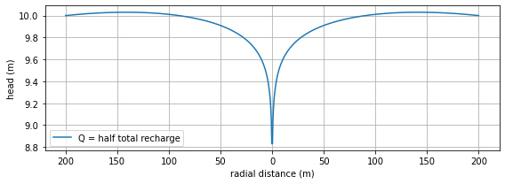
Wells near rivers and impermeable boundaries#
# parameters
xw = 0 # x-location of well, m
yw = 0 # y-location of well, m
Q = 100 # discharge of well, m^3/d
# solution
xg, yg = np.meshgrid(np.linspace(-100, 100, 100), np.linspace(-100, 100, 100))
phi = Q / (4 * np.pi) * np.log(((xg - xw) ** 2 + (yg - yw) ** 2) / 100 ** 2)
psi = Q / (2 * np.pi) * np.arctan2(yg - yw, xg - xw)
# basic flow net (right graph)
plt.subplot(111, aspect=1)
cs1 = plt.contour(xg, yg, psi, np.arange(-Q / 2, Q / 2, Q / 8), colors='C0')
cs2 = plt.contour(xg, yg, phi, np.arange(phi.min(), phi.max(), Q / 8), colors='C1')
cs1.collections[0].set_label('equipotential')
cs2.collections[0].set_label('streamline')
plt.xlabel('x (m)')
plt.ylabel('y (m)')
plt.legend();
---------------------------------------------------------------------------
IndexError Traceback (most recent call last)
Input In [7], in <cell line: 9>()
7 plt.xlabel('x (m)')
8 plt.ylabel('y (m)')
----> 9 plt.legend()
File ~/anaconda3/envs/jb/lib/python3.10/site-packages/matplotlib/pyplot.py:2667, in legend(*args, **kwargs)
2665 @_copy_docstring_and_deprecators(Axes.legend)
2666 def legend(*args, **kwargs):
-> 2667 return gca().legend(*args, **kwargs)
File ~/anaconda3/envs/jb/lib/python3.10/site-packages/matplotlib/axes/_axes.py:305, in Axes.legend(self, *args, **kwargs)
303 if len(extra_args):
304 raise TypeError('legend only accepts two non-keyword arguments')
--> 305 self.legend_ = mlegend.Legend(self, handles, labels, **kwargs)
306 self.legend_._remove_method = self._remove_legend
307 return self.legend_
File ~/anaconda3/envs/jb/lib/python3.10/site-packages/matplotlib/legend.py:499, in Legend.__init__(self, parent, handles, labels, loc, numpoints, markerscale, markerfirst, scatterpoints, scatteryoffsets, prop, fontsize, labelcolor, borderpad, labelspacing, handlelength, handleheight, handletextpad, borderaxespad, columnspacing, ncol, mode, fancybox, shadow, title, title_fontsize, framealpha, edgecolor, facecolor, bbox_to_anchor, bbox_transform, frameon, handler_map, title_fontproperties)
496 self._set_artist_props(self.legendPatch)
498 # init with null renderer
--> 499 self._init_legend_box(handles, labels, markerfirst)
501 tmp = self._loc_used_default
502 self._set_loc(loc)
File ~/anaconda3/envs/jb/lib/python3.10/site-packages/matplotlib/legend.py:780, in Legend._init_legend_box(self, handles, labels, markerfirst)
777 text_list.append(textbox._text)
778 # Create the artist for the legend which represents the
779 # original artist/handle.
--> 780 handle_list.append(handler.legend_artist(self, orig_handle,
781 fontsize, handlebox))
782 handles_and_labels.append((handlebox, textbox))
784 if handles_and_labels:
785 # We calculate number of rows in each column. The first
786 # (num_largecol) columns will have (nrows+1) rows, and remaining
787 # (num_smallcol) columns will have (nrows) rows.
File ~/anaconda3/envs/jb/lib/python3.10/site-packages/matplotlib/legend_handler.py:119, in HandlerBase.legend_artist(self, legend, orig_handle, fontsize, handlebox)
95 """
96 Return the artist that this HandlerBase generates for the given
97 original artist/handle.
(...)
112
113 """
114 xdescent, ydescent, width, height = self.adjust_drawing_area(
115 legend, orig_handle,
116 handlebox.xdescent, handlebox.ydescent,
117 handlebox.width, handlebox.height,
118 fontsize)
--> 119 artists = self.create_artists(legend, orig_handle,
120 xdescent, ydescent, width, height,
121 fontsize, handlebox.get_transform())
123 if isinstance(artists, _Line2DHandleList):
124 artists = [artists[0]]
File ~/anaconda3/envs/jb/lib/python3.10/site-packages/matplotlib/legend_handler.py:515, in HandlerRegularPolyCollection.create_artists(self, legend, orig_handle, xdescent, ydescent, width, height, fontsize, trans)
509 ydata = self.get_ydata(legend, xdescent, ydescent,
510 width, height, fontsize)
512 sizes = self.get_sizes(legend, orig_handle, xdescent, ydescent,
513 width, height, fontsize)
--> 515 p = self.create_collection(orig_handle, sizes,
516 offsets=list(zip(xdata_marker, ydata)),
517 transOffset=trans)
519 self.update_prop(p, orig_handle, legend)
520 p._transOffset = trans
File ~/anaconda3/envs/jb/lib/python3.10/site-packages/matplotlib/legend_handler.py:527, in HandlerPathCollection.create_collection(self, orig_handle, sizes, offsets, transOffset)
526 def create_collection(self, orig_handle, sizes, offsets, transOffset):
--> 527 p = type(orig_handle)([orig_handle.get_paths()[0]],
528 sizes=sizes,
529 offsets=offsets,
530 transOffset=transOffset,
531 )
532 return p
IndexError: list index out of range
# parameters
T = 100 # transmissivity, m^2/d
hc = 0 # head at (0, 0)
d = 100 # half distance between the two wells, m
Q = [100, -100] # discharges of wells, m^3/d
xw = [-d, d] # x-locations of wells, m
yw = [0, 0] # y-locations of wells, m
phic = T * hc # discharge potential at origin, m^3/d
# solution
xg, yg = np.meshgrid(np.linspace(-200, 200, 100), np.linspace(-150, 150, 100))
pot = phic
psi = 0.0
Qx = 0.0
Qy = 0.0
for n in range(2):
rsq = (xg - xw[n]) ** 2 + (yg - yw[n]) ** 2
pot += Q[n] / (4 * np.pi) * np.log(rsq)
psi += Q[n] / (2 * np.pi) * np.arctan2(yg - yw[n], xg - xw[n])
Qx += -Q[n] / (2 * np.pi) * (xg - xw[n]) / rsq
Qy += -Q[n] / (2 * np.pi) * (yg - yw[n]) / rsq
# basic plot
plt.figure(figsize=(8, 4))
plt.subplot(121, aspect=1)
plt.contour(xg, yg, pot, np.arange(phic - 100, phic + 100, 10), colors='C0')
plt.contour(xg, yg, psi, np.arange(-Q[0], Q[0], 10), colors='C1')
plt.xlabel('x (m)')
plt.ylabel('y (m)')
plt.subplot(122, aspect=1)
plt.streamplot(xg, yg, Qx, Qy, color='C1', density=0.7)
plt.xlabel('x (m)')
plt.ylabel('y (m)');
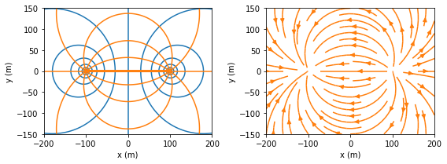
# changed parameters
Q = [100, 100] # discharge of well and image well, m^3/d
# solution
pot = 0.0
psi = 0.0
Qx = 0.0
Qy = 0.0
for n in range(2):
rsq = (xg - xw[n]) ** 2 + (yg - yw[n]) ** 2
pot += Q[n] / (4 * np.pi) * np.log(rsq) + phic
psi += Q[n] / (2 * np.pi) * np.arctan2(yg - yw[n], xg - xw[n])
Qx += -Q[n] / (2 * np.pi) * (xg - xw[n]) / rsq
Qy += -Q[n] / (2 * np.pi) * (yg - yw[n]) / rsq
# basic plot
plt.figure(figsize=(8, 4))
plt.subplot(121, aspect=1)
plt.contour(xg, yg, pot, 20, colors='C0')
plt.contour(xg, yg, psi, 20, colors='C1')
plt.xlabel('x (m)')
plt.ylabel('y (m)')
plt.subplot(122, aspect=1)
plt.streamplot(xg, yg, Qx, Qy, color='C1', density=0.7)
plt.xlabel('x (m)')
plt.ylabel('y (m)');
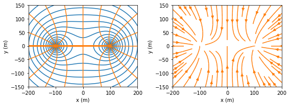
# parameters
xw = [-100, 100, -100, 100] # x-locations of well and image wells, m
yw = [-50, -50, 50, 50] # y-locations of well and image wells, m
Qw = [100, 100, -100, -100] # discharge of well and image wells, m^3/d
# solution
xg, yg = np.meshgrid(np.linspace(-200, 0, 101), np.linspace(-150, 0, 101))
phi = 0
psi = 0
for n in range(4):
phi += Qw[n] / (4 * np.pi) * np.log((xg - xw[n]) ** 2 + (yg - yw[n]) ** 2)
psi += Qw[n] / (2 * np.pi) * np.arctan2(yg - yw[n], xg - xw[n])
# flow net in right graph
plt.subplot(111, aspect=1)
plt.contour(xg, yg, phi, np.arange(-100, 100, 5), colors='C0')
plt.contour(xg, yg, psi, np.arange(-200, 200, 5), colors='C1')
plt.text(-100, 2, 'specified head', color='C0', ha='center')
plt.text(2, -75, 'impermeable', color='C1', rotation=90, va='center')
plt.xlabel('x (m)')
plt.ylabel('y (m)');
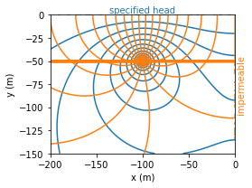
Wells near an inhomogeneity boundary#
# parameters
d = 100 # distance of well from inhomogeneity boundary, m
Q = 100 # discharge of well, m^3/d
TL = 100 # transmissivity on left side, m^2/d
# solution
def head_and_psi(x, y, TL, TR, d=100, Q=100):
r0 = np.sqrt((x + d) ** 2 + y ** 2)
r1 = np.sqrt((x - d) ** 2 + y ** 2)
theta0 = np.arctan2(y, x + d)
theta1 = np.arctan2(-y, d - x)
if x < 0:
h = Q / (2 * np.pi * TL) * np.log(r0 / r1) + \
Q / (np.pi * (TL + TR)) * np.log(r1)
psi = Q / (2 * np.pi) * (theta0 - theta1) + \
Q * TL / (np.pi * (TL + TR)) * theta1
else:
h = Q / (np.pi * (TL + TR)) * np.log(r0)
psi = Q * TR / (np.pi * (TL + TR)) * theta0
return h, psi
hpsifunc = np.vectorize(head_and_psi)
xg, yg = np.meshgrid(np.linspace(-200, 200, 100), np.linspace(-150, 150, 100))
ha, psia = hpsifunc(xg, yg, TL=TL, TR=TL / 5, d=d, Q=Q)
hb, psib = hpsifunc(xg, yg, TL=TL, TR=5 * TL, d=d, Q=Q)
# basic plot
plt.subplot(121, aspect=1, title='$T_L$=100 m$^2$/d, $T_R$=20 m$^2$/d')
plt.contour(xg, yg, ha, 40, colors='C0')
plt.contour(xg, yg, psia, np.arange(-50, 50, 2.5), colors='C1')
plt.fill([0, 200, 200, 0], [-150, -150, 150, 150], fc=[.9, .9, .9])
plt.xlabel('x (m)')
plt.ylabel('y (m)')
plt.subplot(122, aspect=1, title='$T_L$=100 m$^2$/d, $T_R$=500 m$^2$/d')
plt.contour(xg, yg, hb, 40, colors='C0')
plt.contour(xg, yg, psib, np.arange(-50, 50, 2.5), colors='C1')
plt.fill([0, 200, 200, 0], [-150, -150, 150, 150], fc=[.9, .9, .9])
plt.xlabel('x (m)')
plt.ylabel('y (m)');
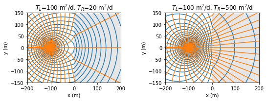
Wells in a semi-confined aquifer#
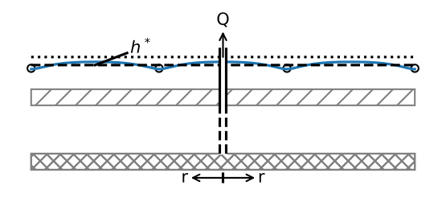# parameters
T = 200 # transmissivity of bottom aquifer, m^2/d
c = 1000 # resistance of leaky layer, d
hstar = 0 # fixed head in top aquifer, m
rw = 0.3 # radius of the well, m
lab = np.sqrt(T * c) # leakage factor, m
Q = 500 # discharge of well, m^3/d
# solution
from scipy.special import k0, k1
r = np.linspace(rw, 4 * lab, 200)
h = -Q / (2 * np.pi * T) * k0(r / lab) + hstar
happrox = Q / (2 * np.pi * T) * np.log(r / (1.123 * lab)) + hstar
Qtot = 2 * np.pi * r * Q / (2 * np.pi * lab) * k1(r / lab)
# basic plot
plt.subplot(121)
plt.plot(r / lab, h, label='head')
plt.plot(r / lab, happrox, label='approx')
plt.xlabel('$r/\lambda$')
plt.ylabel('head (m)')
plt.grid()
plt.legend()
plt.subplot(122)
plt.plot(r / lab, Qtot / Q)
plt.xlabel('$r/\lambda$')
plt.ylabel('$Q_{tot}/Q$')
plt.grid();
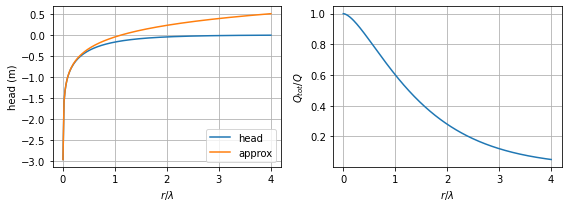
Wells in a two-aquifer system#
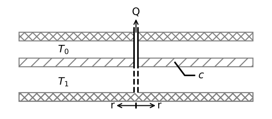# parameters
T0 = 100 # transmissivity aquifer 0, m^2/d
T1 = 150 # transmissivity aquifer 1, m^2/d
c = 1000 # resistance of leaky layer, d
zaq = [0, -10, -15, -25] # elevation of top of layers and bottom, m
R = 200 # distance where head is fixed, m
hR = 5 # head at r=R, m
Q = 1000 # discharge of well, m^3/d
rw = 0.3 # radius of well, m
lab = np.sqrt(c * T0 * T1 / (T0 + T1)) # leakage factor, m
# solution
from scipy.special import k0, k1
r = np.linspace(rw, 5 * lab, 200)
h0 = Q / (2 * np.pi * (T0 + T1)) * (np.log(r / R) + \
k0(r / lab) - k0(R / lab)) + hR
h1 = Q / (2 * np.pi * (T0 + T1)) * (np.log(r / R) + \
T0 * k0(r / lab) / T1 - k0(R / lab)) + hR
Q0tot = -Q * T0 / (2 * np.pi * (T0 + T1)) * (1 / r -
k1(r / lab) / lab) * 2 * np.pi * r
Q1tot = -Q * T1 / (2 * np.pi * (T0 + T1)) * (1 / r +
T0 * k1(r / lab) / (T1 * lab)) * 2 * np.pi * r
psi = np.zeros((len(zaq), len(r)))
psi[1] = Q0tot
psi[2] = Q0tot
psi[3] = Q1tot + Q0tot
# basic plot head and flow
plt.subplot(121)
plt.plot(r / lab, h0, label='aquifer 0')
plt.plot(r / lab, h1, label='aquifer 1')
plt.xlabel('$r/\lambda$')
plt.ylabel('head (m)')
plt.grid()
plt.legend()
plt.subplot(122)
plt.plot(r / lab, Q0tot / Q, label='aquifer 0')
plt.plot(r / lab, Q1tot / Q, label='aquifer 1')
plt.xlabel('$r$ (m)')
plt.ylabel('$Q_{tot} / Q$')
plt.grid()
plt.legend();
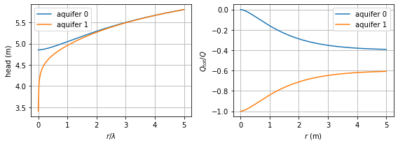
plt.subplot(aspect=20)
plt.contour(r, zaq, psi, 10, colors='C1')
plt.contour(-r, zaq, psi, 10, colors='C1')
plt.fill([-r[-1], r[-1], r[-1], -r[-1]], [-15, -15, -10, -10], color=[.9, .9, .9])
plt.plot([0, 0], [-25, -15], 'k--')
plt.xlabel('x (m)')
plt.ylabel('z (m)');
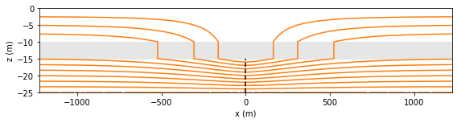